Gibson
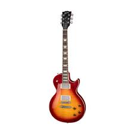
Gibson Les Paul
Gibson Les Paul adalah gitar seri pertama yang dijual oleh Gibson pada tahun 1952. Karena kualitasnya bagus, gitar ini harganya mahal dan banyak diminati. Jika bingung memilih gitar Gibson, saya sarankan pilih yang seri ini.
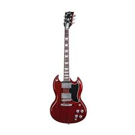
Gibson SG
Gibson SG diperkenalkan oleh Gibson pada tahun 1961. SG adalah singkatan dari "Solid Guitars. Gitar ini cocok untuk genre musik seperti blues dan rock, karena memiliki suara atau tone dengan treble yang nampak jelas.
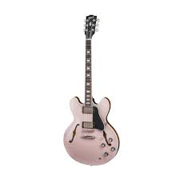
Gibson ES
ES pada gitar ini, yaitu singkatan dari "Electric Spanish". Gitar ini termasuk gitar hollow body, lihatlah pada lubang di bagian samping. Gitar hollow body biasa digunakan untuk musik Jazz.
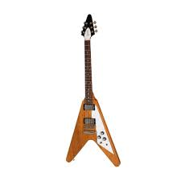
Gibson Flying V
Gibson Flying V diperkenalkan oleh Gibson pada tahun 1958. Body gitar ini membentuk huruf V, seperti nama serinya.
Fender
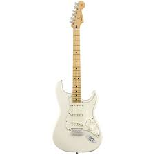
Fender Stratocaster
Fender Stratocaster dibuat pada tahun 1954. Gitar ini banyak digunakan oleh gitaris papan atas maupun gitaris umum. Karena perkembangan zaman, mungkin sekarang pengguna gitar ini tidak sebanyak dulu.
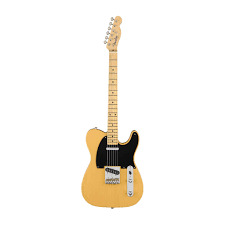
Fender Telecaster
Fender Telecaster diperkenalkan pada tahun 1949. Gitar ini merupakan salah satu gitar pertama yang dibuat dalam skala yang besar. Pengguna gitar ini juga banyak.
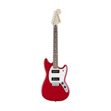
Fender Mustang
Gitar ini diproduks oleh Fender pada tahun 1964. Gitar ini banyak digunakan di genre musik alternative rock, sekitar tahun 1990-an.
Ibanez
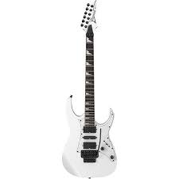
Ibanez RG
Ibanez RG adalah gitar paling laris untuk genre musik hard rock dan heavy metal. Salah satu kelebihannya adalah gitar ini memiliki 24 fret. Pada zaman sekarang, gitar 24 fret telah merajalela.
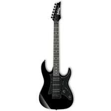
Ibanez GIO
Ibanez GIO adalah gitar yang dibuat oleh Hoshino Gakki. Gitar seri ini dibuat di China maupun di Indonesia. Walaupun serinya sama, tetapi model gitarnya berbeda.
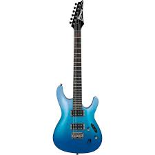
Ibanez S
Ibanez S juga dibuat oleh Hoshino Gakki pada akhir tahun 1980-an. Gitar ini memiliki body yang ramping, untuk membuat gitaris bermain dengan nyaman.
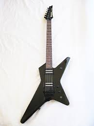
Ibanez X
Ibanez X pertama kali ditunjukkan oleh Ibanez pada tahun 1983. Saat ini, seri X diganti dengan Xiphos.
Yamaha
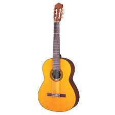
Yamaha C80
Yamaha C80 adalah gitar akustik dengan senar nilon dari Yamaha. Gitar ini memiliki harga terjangkau dengan kualitas normal.
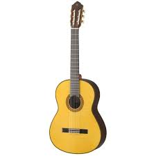
Yamaha CG192S
Yamaha CG192S adalah gitar akustik dengan senar nilon yang harganya cukup mahal. Tetapi, kualitas gitar ini sangat terjamin.
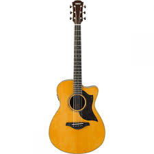
Yamaha AC5R
Yamaha AC5R adalah gitar akustik elektrik dengan tone yang natural dan dinamis dari sistem pickupnya. Gitar ini sangat mahal, sekitar 22 jutaan. Yamaha AC5R sangat cocok untuk konser panggung.
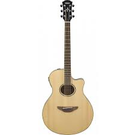
Yamaha APX600
Yamaha APX600 adalah gitar akustik elektrik dengan tone sempurna dan jarak senar pendek. Senar pendek dapat membuat gitaris menjadi fleksibel saat menekan fret. Gitar ini harganya berada di tengah-tengah, yaitu seharga 3 jutaan.
Taylor
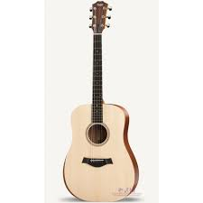
Taylor Academy 10
Taylor Academy 10 adalah gitar yang cocok untuk orang yang baru belajar bermain gitar. Desainnya sengaja dibuat untuk kenyamanan para gitaris baru.
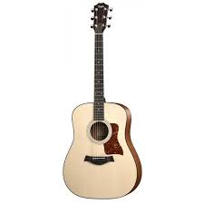
Taylor 110E
Taylor 110E adalah gitar middle class dari merek Taylor. Gitar ini memiliki tas gitar yang ringan, cocok untuk gitaris yang sering membawa gitarnya ke mana-mana.
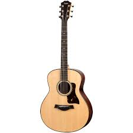
Taylor GT Urban Ash
Taylor GT Urban Ash didesain untuk kenyamanan bermain yang luar biasa. GT adalah singkatan dari "Grand Theatre". Panggung yang besar pun dapat teratasi oleh gitar ini.
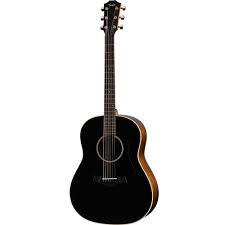
Taylor AD17
Taylor AD17 adalah gitar yang memiliki desain khusus. AD pada seri ini adalah singkatan dari "American Dream". Dapat dilihat bahwa desainnya berbeda dari seri Taylor lainnya.
Takamine
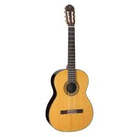
Takamine C132S
Takamine C132S adalah gitar akustik senar nilon yang fleksibel. Gitar ini cocok dimainkan di berbagai macam genre musik.
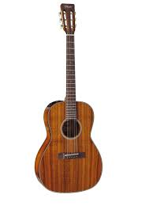
Takamine EF407
Takamine EF407 memiliki desain warna yang detail seperti kayu. Gitar ini tidak terlalu besar, sehingga nyaman dimainkan saat berdiri.
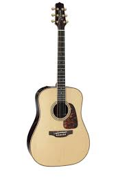
Takamine P7D
Takamine P7D dibuat dari kayu Rosewood untuk suara yang jernih. Lalu, ada preamp juga yang disematkan pada gitar ini.